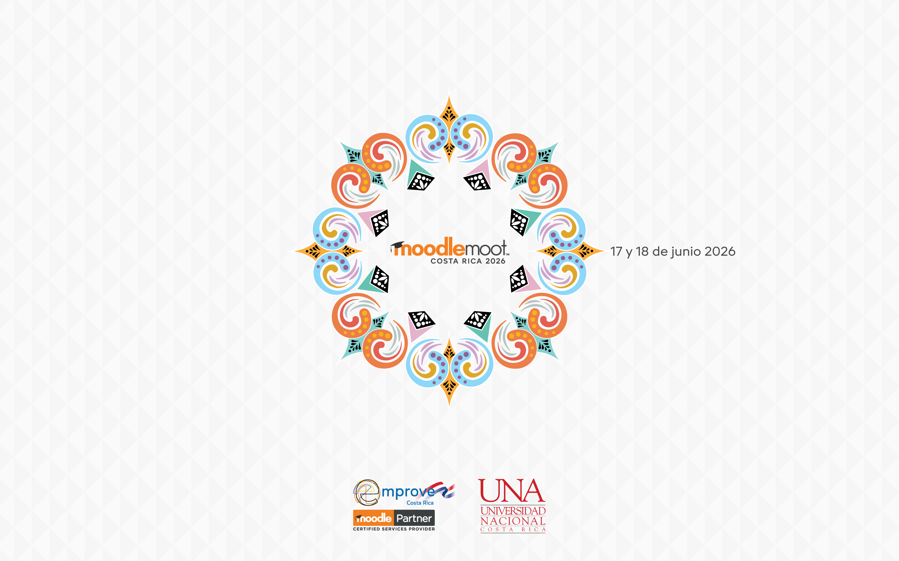
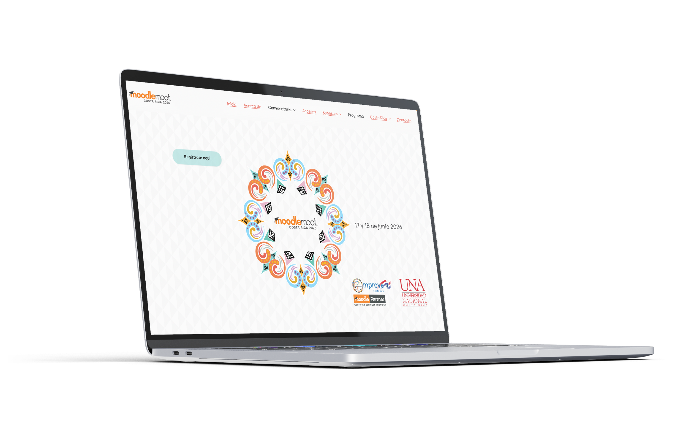
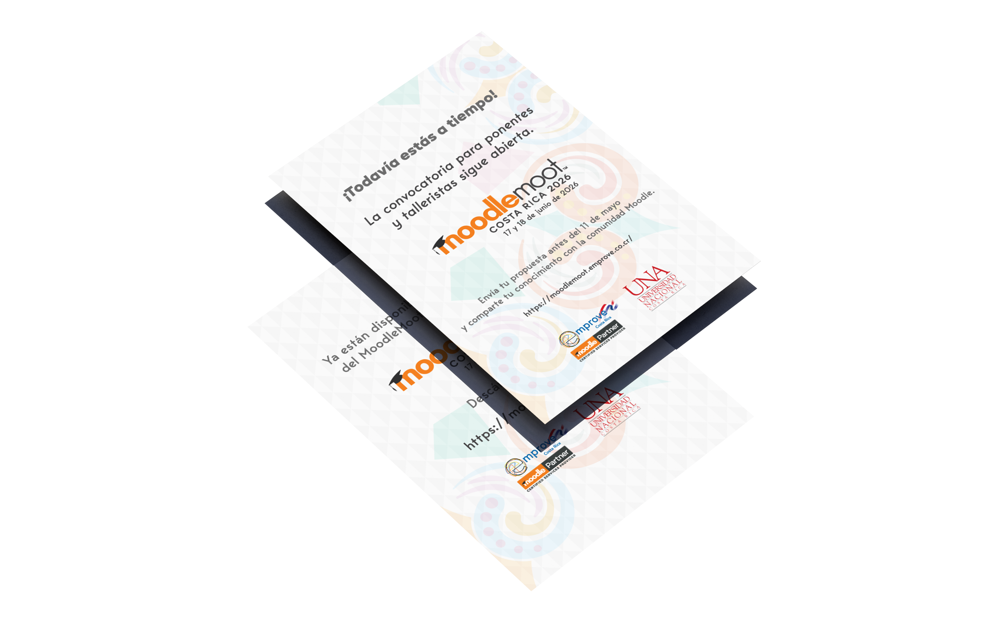
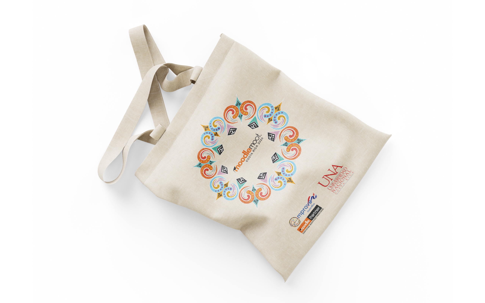
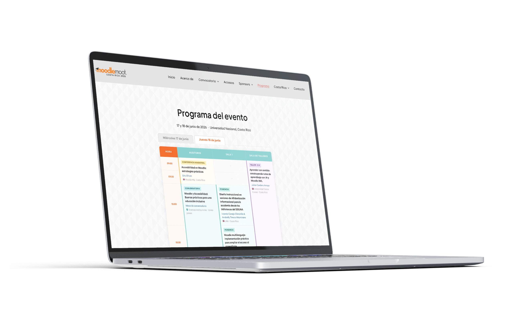

05
Emprove – Universidad Nacional, Costa Rica, 2026
Identidad visual para MoodleMoot Costa Rica 2026, el encuentro de la comunidad Moodle organizado por Emprove y la Universidad Nacional de Costa Rica en Heredia.
El punto de partida fue la carreta costarricense, uno de los sistemas decorativos más sofisticados de la artesanía latinoamericana. Sus patrones geométricos, construidos desde la simetría radial y el color vibrante, funcionaron como analogía visual del aprendizaje en red: estructuras que se expanden desde un centro, se replican con variaciones, y ganan sentido en su conjunto más que en sus partes aisladas.
El sistema gráfico se desarrolló íntegramente en ilustración vectorial, extrayendo la lógica formal de los patrones de la carreta, su ritmo, su simetría, su capacidad de escalar, y traduciéndola al lenguaje de un evento académico internacional. El resultado es una identidad que es simultáneamente local y contemporánea: reconocible desde el territorio costarricense, legible desde cualquier contexto.
El sistema atravesó identidad, web, materiales impresos y comunicación digital. Cada aplicación mantuvo la misma lógica de expansión radial que define al sistema, una forma que crece sin perder su centro.




